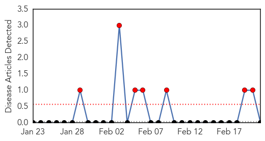
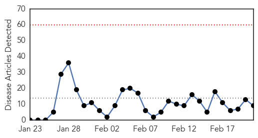
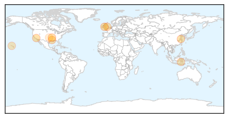

Mold/Fungal
30-Day Web Trend
7 alerts, 0 warnings

30-Day Twitter Trend
0 alerts, 0 warnings

Article Locations

Article Confidences

Top Articles:
-
No articles found for Feb 21, 2014
Top Tweets:
-
No tweets found for Feb 21, 2014
Influenza
30-Day Web Trend
0 alerts, 0 warnings

30-Day Twitter Trend
1 alerts, 0 warnings

Article Locations
Article Confidences

Top Articles:
- 0.998
- Number of flu season deaths rises to eight
- 0.995
- CDC begging young and middle-aged people to get flu shots as death toll rises
- 0.993
- Doctors Urge Southland Residents To Get Flu Vaccines As Death Toll Rises « CBS Los Angeles
- 0.967
- WHO provides update on human cases of avian influenza in China
- 0.965
- Pregnant Woman Dies of Flu-Related Illness in LA County
- 0.924
- Winter Flu Jab helps Lessen Risk of Stroke
- 0.834
- India General News: India Joins U.S.-Led Initiative To Boost Health Security
- 0.792
- News at Nine, February 21
- 0.525
- West Virginians: We don't drink the water
Top Tweets:
- 0.808
- RT: Another visit from H1N1 http://t.co/gOreYV1s3U flu influenza
- 0.580
- RT: Recommended composition of influenza virus vaccines for use in the 2014-15 northern hemisphere influenza season http://t.co/trmJ…